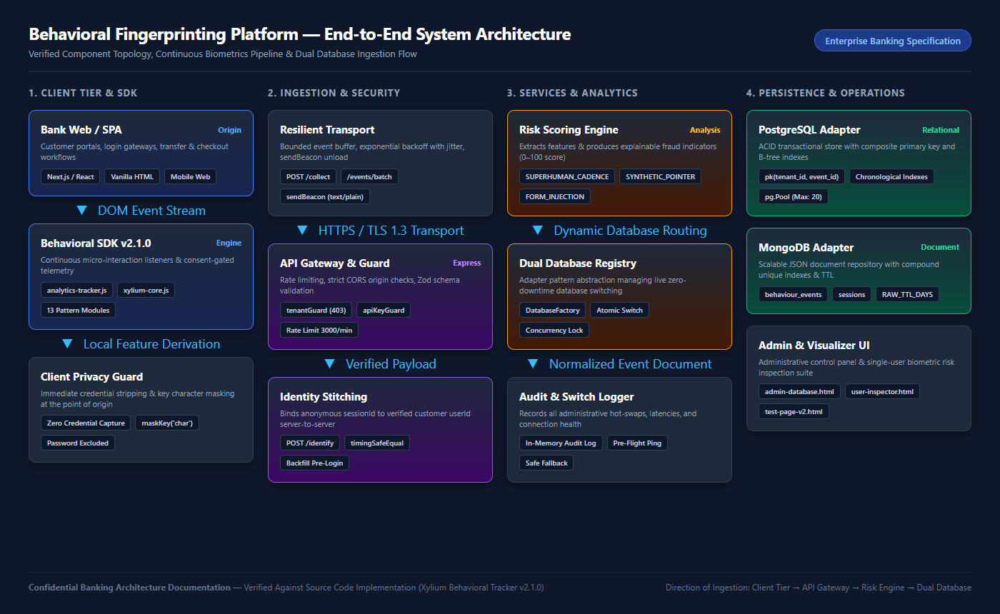

The Behavioral Fingerprinting Platform is a bank-grade client security telemetry and biometrics intelligence solution designed to safeguard customer sessions against automated attacks, synthetic bot interaction, credential stuffing, and unauthorized account takeovers (ATO). By unobtrusively capturing continuous user interaction dynamics—such as micro-pointer trajectories, typing flight/hold cadences, touch pressures, scroll kinematics, and device contexts—the platform constructs an explainable, continuous behavioral profile without introducing frictional CAPTCHAs or interrupting legitimate digital banking journeys.
Traditional banking perimeter defenses (e.g., passwords, SMS OTPs, and device cookies) operate deterministically at discrete authentication gates. However, modern adversary toolkits routinely circumvent these static controls via credential stuffing, phishing proxies (Evilginx), SIM-swapping, and session-token hijacking. The Behavioral Fingerprinting Platform addresses these challenges by introducing continuous, post-login behavioral verification:
The verified application is structured into four core architectural tiers:
| Tier / Component | Physical Source Location | Primary Enterprise Responsibility |
|---|---|---|
| Client-Side SDK | behavioral_tracker_sdk/analytics-tracker.js & sdk/xylium-core.js |
Captures passive interaction dynamics, enforces strict client-side PII stripping, normalizes telemetry, and manages buffered, resilient HTTPS transmission. |
| Ingestion API Gateway | src/app.js & src/routes/collect.js & src/routes/analytics.js |
Enforces tenant authorization (tenantGuard), API rate limiting, trusted-proxy extraction, JSON body validation via Zod, and beacon parsing. |
| Identity Stitching & Risk Engine | src/collectService.js & src/riskService.js |
Performs server-to-server identity linking, backfills pre-login interaction telemetry, computes biometric features, and outputs explainable risk scores. |
| Dual Database Layer | src/database/adapters/ (PostgreSQL + MongoDB) |
Provides an enterprise database-agnostic repository interface supporting both ACID relational storage (PostgreSQL) and JSON document collections (MongoDB) with zero-downtime hot-switching. |
| Operations & Visualizer Dashboards | behavioral_tracker_sdk/ (admin-database.html, user-inspector.html) |
Permits authorized administrators to monitor adapter latency, execute live database switches, inspect single-user journeys, and review real-time biometric risk signals. |
The Behavioral Fingerprinting architecture follows a decoupled, resilient ingestion pattern specifically tailored for banking web applications and single-page applications (SPAs). Telemetry flows strictly unidirectionally from the client browser to the backend ingestion layer, where it is validated, tenant-scoped, and persisted into the active database adapter.

The operational lifecycle spans client-side instrumentation, asynchronous transmission, server-side identity resolution, and behavioral risk evaluation. Below is the precise 10-step lifecycle followed by a realistic banking scenario.
Consider a customer named Alice accessing her online banking portal:
https://online.nexusbank.com/login. The SDK initializes anonymously with sessionId="sess_9b8a2f" and userId=null. The SDK captures her screen resolution (1920x1080), browser locale, and battery level (84%, discharging).keyMasked="char", holdTimeMs=85, and flightTimeMs=120. Next, she clicks the password field. She types her 16-character password; the SDK captures 16 keypress events with keyMasked="char" and hold times. Zero password characters or strings are ever captured or stored in memory.POST /collect.POST /identify request to the collector with sessionId="sess_9b8a2f" and verified userId="cust_84920". The collector marks the session authenticated and updates all earlier pre-login events with cust_84920./transfers/international and initiates a $5,000 wire transfer. The SDK fires account_page_view and payment_flow_start. The risk engine evaluates her session: motor jitter is natural, typing cadence is 4.2 keys/sec (consistent with human baseline), and trajectory curvature is organic. The resulting risk score is 12/100 (LOW, ALLOW).SYNTHETIC_POINTER_TRAJECTORY and AUTOMATED_FORM_INJECTION, yielding a risk score of 85/100 (CRITICAL, STEP_UP_AUTH). The bank prompts for hardware security key verification, successfully thwarting account takeover.Data minimization and privacy-by-design are fundamental pillars of the platform. The SDK captures how a user interacts with a page, rather than what data the user enters. The table below outlines every data category, verified against the actual schema and SDK code.
| Data Category | Example Data Fields in Code | Biometric / Operational Purpose | Collection Mechanism | Req/Opt | Status |
|---|---|---|---|---|---|
| Session Identity | sessionId, anonymousId, tenantId, clientId, userId |
Binds interaction sequences to session lifecycles and customer profiles. | sessionStorage / localStorage UUID generation. | Req | Fully Implemented |
| Pointer Dynamics | pointerX, pointerY, speedPxPerMs, angleDeg, isStraightLine, hoverDurationMs |
Evaluates human motor tremor, trajectory curvature, bot straightness, and dwell. | Throttled pointermove (50ms), pointerdown, mouseover listeners. | Req | Fully Implemented |
| Keyboard Dynamics | keyMasked, flightTimeMs, holdTimeMs, keysPerSecond, isTypingPause |
Captures keystroke rhythms, inter-key flight times, and typing cadences. | keydown, keyup event listeners with performance.now() deltas. | Req | Fully Implemented |
| Form Interactions | fieldId, fieldCategory, fromField, toField, durationMs, pasteDetected |
Tracks focus order, dwell time per field, and non-typed paste injections. | focusin, focusout, paste, and CSS animation autofill watcher. | Req | Fully Implemented |
| Scroll Kinematics | scrollY, scrollDirection, scrollDeltaPx, scrollDepthPercent, scrollMilestone |
Measures reading speeds, navigational acceleration, and page consumption. | Throttled window scroll listener (100ms) with depth calculation. | Opt | Fully Implemented |
| Touch & Mobile | touchCount, durationMs, gestureType, swipeDirection, swipeDistancePx, orientation |
Captures touch contact duration, swipe velocity, and device screen rotation. | touchstart, touchmove, touchend, and orientationchange listeners. | Opt | Fully Implemented |
| Lifecycle & Nav | fromRoute, toRoute, navigationMethod, visibilityState, idleDurationMs, pageLoadTimeMs |
Monitors SPA view switches, tab backgrounding, idle intervals, and load latency. | visibilitychange, pagehide, popstate, performance.timing APIs. | Req | Fully Implemented |
| Banking Workflow | flowType, paymentId, paymentAmount, paymentCurrency, recipientType, challengeType |
Correlates behavioral anomalies with high-risk financial workflow steps. | Explicit SDK calls (trackPaymentFlowStart, trackPaymentConfirmation). | Opt | Fully Implemented |
| Device Metadata | deviceCategory, deviceOs, screenWidth, screenHeight, batteryLevel, isCharging |
Establishes device baselines and flags virtualization or battery spoofing. | navigator.userAgent, window.screen, navigator.getBattery() API. | Opt | Fully Implemented |
| Network Risk | isVpn, isProxy, isDatacenter, geoIsNewCountry, clientIp |
Identifies commercial VPNs, proxies, and TOR exit nodes server-side. | Backend IP intelligence provider lookup (IPQS/IPAPI) on client IP. | Opt | Partially (Route unmounted) |
maskKey() function inspects every keypress. If e.key is a printable character (length 1), it returns "char". If it is a navigation key (Backspace, Enter, Tab), it returns the key name. The actual character typed is never captured, buffered, or transmitted.SENSITIVE_INPUT_REGEX (/password|passwd|secret|cvv|cvc|card|credit|token|otp|pin|ssn|auth|account_?no/i) checks input element attributes (type, id, name). Any matching field has its fieldId redacted to "redacted_sensitive_field", and properties are scrubbed.pastedText.length and detects whitespace/non-printable flags, but completely discards pastedText. No clipboard strings ever leave the browser.DELETE /api/analytics/users/:userId endpoint.data-bf-field="password" or data-bf-field="sensitive". This ensures complete privacy shielding regardless of custom styling frameworks.
The inventory below catalogues all events supported across analytics-tracker.js, xylium-bf-v2.js, and the modular sdk/ pattern modules.
| Event Name | Category | Trigger Condition | Captured Fields & Metrics | Code Location | Status |
|---|---|---|---|---|---|
pointer_move / mousemove |
pointer | Mouse or stylus moves across DOM viewport. | pointerX, pointerY, sampledIntervalMs | analytics-tracker.js:423, xylium-mouse.js | Verified |
pointer_velocity |
pointer | Derived locally from consecutive cursor coordinates. | speedPxPerMs, angleDeg, isStraightLine, distancePx | analytics-tracker.js:436 | Verified |
pointer_down / pointer_up |
pointer | Primary pointer button pressed or released. | pointerX, pointerY, holdDurationMs, targetCategory, targetId | analytics-tracker.js:348, xylium-mouse.js | Verified |
pointer_click / click |
pointer | Mouse click or pointer tap completed. | pointerX, pointerY, targetCategory, targetId, textPreview | analytics-tracker.js:372, xylium-mouse.js | Verified |
hover / hover_before_click |
pointer | Cursor dwells over CTA or button before click. | targetId, targetCategory, hoverDurationMs, isZeroHover | analytics-tracker.js:460, xylium-bf-v2.js:327 | Verified |
mouse_trajectory |
pointer | Continuous drag or movement between down and up. | straightnessIndex, actualPathPx, straightLinePx, maxDeviationPx | xylium-bf-v2.js:243, xylium-mouse.js | Verified |
overshoot |
pointer | Pointer travels past clickable target before correction. | didOvershoot, overshootPx, correctionMs, approachAngleDeg | xylium-bf-v2.js:299, xylium-mouse.js | Verified |
mouse_entropy |
pointer | 50-sample cursor window angle variation analysis. | entropy, avgAngleChangeDeg, stdAngleChangeDeg | xylium-bf-v2.js:410, xylium-mouse.js | Verified |
key_down / keydown |
keyboard | Key pressed down on keyboard. | keyMasked ("char"/control), fieldCategory, flightTimeMs | analytics-tracker.js:498, xylium-keyboard.js | Verified |
key_up / keyup |
keyboard | Key released on keyboard. | keyMasked, fieldCategory | analytics-tracker.js:521, xylium-keyboard.js | Verified |
typing_dynamics / keytiming |
keyboard | Flight time between successive keystrokes. | flightTimeMs, holdTimeMs, keysPerSecond, isTypingPause | analytics-tracker.js:506, xylium-bf-v2.js:450 | Verified |
correction_key |
keyboard | Backspace or Delete pressed during input. | key, holdTimeMs, isHeld, gapFromLastMs, burstIndex | xylium-bf-v2.js:473, xylium-keyboard.js | Verified |
field_focused / focus_change |
form | User focuses an input field or switches fields. | fieldId, fieldCategory, fromField, toField | analytics-tracker.js:541, xylium-form.js | Verified |
field_interaction / field_time_spent |
form | User blurs field after active editing. | fieldId, fieldCategory, durationMs, focusCount | analytics-tracker.js:562, xylium-bf-v2.js:632 | Verified |
paste_detected / paste |
form | Paste shortcut or context menu paste triggered. | pasteDetected, fieldId, isPasswordField, pastedLength | analytics-tracker.js:583, xylium-bf-v2.js:787 | Verified |
autofill / autofill_summary |
form | Browser autofill triggered on login inputs. | field, fillTimeMs, username_autofilled, password_autofilled | xylium-bf-v2.js:974, xylium-form.js | Verified |
scroll / scroll_milestone |
scroll | Page scrolled to 25%, 50%, 75%, or 100% depth. | scrollY, scrollDirection, scrollDeltaPx, scrollMilestone | analytics-tracker.js:676, xylium-scroll.js | Verified |
touch_start / touch_end / swipe |
touch | Touch gesture contact and swipe trajectory. | touchCount, durationMs, gestureType, swipeDirection, swipeDistancePx | analytics-tracker.js:608, xylium-touch.js | Verified |
session_start / session_end |
lifecycle | Session initiated or terminated via pagehide. | sessionId, userAgent, referrer, reason | analytics-tracker.js:870, analytics-tracker.js:336 | Verified |
page_navigation / page_entered |
navigation | SPA route transition executed. | fromRoute, toRoute, navigationMethod, pageViewId | analytics-tracker.js:910, analytics-tracker.js:923 | Verified |
login_attempt / login_success |
auth | Authentication workflow outcomes. | userId, method, reasonCode, route | analytics-tracker.js:956, analytics-tracker.js:972 | Verified |
account_page_view |
banking | Customer visits balance, transactions, or statements. | accountCategory, viewType, route | analytics-tracker.js:1007 | Verified |
payment_flow_start / confirmation |
banking | Payment workflow initiated or completed. | flowType, paymentId, paymentAmount, paymentCurrency, paymentStatus | analytics-tracker.js:1015, analytics-tracker.js:1024 | Verified |
transaction_failure |
banking | Financial transfer rejected or failed. | reasonCode, flowType, route | analytics-tracker.js:1034 | Verified |
step_up_auth_required |
banking | 2FA challenge triggered by policy or risk score. | challengeType, trigger, route | analytics-tracker.js:1049 | Verified |
{
"events": [
{
"eventId": "evt_7f8a9b2c-3d4e-5f6a-7b8c-9d0e1f2a3b4c",
"sessionId": "sess_89a0b1c2-d3e4-5f6a-7b8c-9d0e1f2a3b4c",
"tenantId": "nexus_bank",
"clientId": "client_nexus_portal",
"userId": "cust_84920",
"eventName": "pointer_velocity",
"eventCategory": "pointer",
"timestamp": "2026-10-21T06:15:30.142Z",
"sequenceNumber": 142,
"page": "/transfers/international",
"sanitizedRoute": "/transfers/international",
"pointerX": 482,
"pointerY": 614,
"pointerSpeedPxPerMs": 1.28,
"pointerAngleDeg": 42,
"pointerDistancePx": 64,
"isStraightLine": false,
"deviceCategory": "desktop",
"deviceOs": "windows",
"deviceBrowser": "chrome",
"screenWidth": 1920,
"screenHeight": 1080,
"sdkVersion": "2.1.0",
"schemaVersion": "2.0"
},
{
"eventId": "evt_1a2b3c4d-5e6f-7a8b-9c0d-1e2f3a4b5c6d",
"sessionId": "sess_89a0b1c2-d3e4-5f6a-7b8c-9d0e1f2a3b4c",
"tenantId": "nexus_bank",
"clientId": "client_nexus_portal",
"userId": "cust_84920",
"eventName": "payment_flow_start",
"eventCategory": "banking",
"timestamp": "2026-10-21T06:15:32.890Z",
"sequenceNumber": 143,
"page": "/transfers/international",
"sanitizedRoute": "/transfers/international",
"flowType": "wire_transfer",
"paymentAmount": 5000.00,
"paymentCurrency": "USD",
"recipientType": "international",
"sdkVersion": "2.1.0",
"schemaVersion": "2.0"
}
]
}
The bank can integrate the SDK using either the unified enterprise build (analytics-tracker.js) or the modular drop-in script (xylium-core.js). Both execute across modern Chromium, Safari, and Firefox browsers.
Recommended for modern banking web portals and Single Page Applications (SPAs). This version bundles the full 16-category biometrics suite, JWT authentication handling, automatic flush management, and banking lifecycle methods.
<!-- 1. Include the SDK script -->
<script src="https://cdn.nexusbank.com/sdk/analytics-tracker.js"></script>
<!-- 2. Initialize the SDK singleton -->
<script>
const tracker = BehaviorSDK.init({
apiEndpoint: "https://collector.nexusbank.com/api/analytics",
tenantId: "nexus_bank",
clientId: "portal_web",
batchSize: 25,
flushIntervalMs: 5000,
idleThresholdMs: 5000,
consent: true, // Set to false if awaiting explicit banner consent
});
// Wire up post-login identity linking
function onUserLoginSuccess(userId, jwtToken) {
tracker.loginSuccess(userId, jwtToken);
}
// Wire up banking workflow tracking
function onTransferInitiated(amount, currency) {
tracker.trackPaymentFlowStart("wire_transfer", currency, "domestic");
}
</script>
import { useEffect, useRef } from "react";
import { usePathname } from "next/navigation";
export function useBehavioralTracker({ tenantId, apiEndpoint, userId }) {
const trackerRef = useRef(null);
const pathname = usePathname();
useEffect(() => {
if (typeof window !== "undefined" && window.BehaviorSDK) {
trackerRef.current = window.BehaviorSDK.init({
apiEndpoint: apiEndpoint || "https://collector.nexusbank.com/api/analytics",
tenantId: tenantId || "nexus_bank",
clientId: "portal_nextjs",
consent: true,
});
}
return () => {
if (trackerRef.current) trackerRef.current.stop();
};
}, [tenantId, apiEndpoint]);
useEffect(() => {
if (trackerRef.current && pathname) {
trackerRef.current.trackPageView(pathname);
}
}, [pathname]);
useEffect(() => {
if (trackerRef.current && userId) {
trackerRef.current.identify(userId);
}
}, [userId]);
return trackerRef.current;
}
<!-- Landing Core File: Reads config, manages session, exposes window.XyliumBF -->
<script src="https://cdn.nexusbank.com/sdk/xylium-core.js"
data-tenant-id="nexus_bank"
data-app-id="banking_portal"
data-api-endpoint="https://collector.nexusbank.com"
data-capture-geo="false"></script>
<!-- Selective behavioral pattern modules (load order does not matter) -->
<script src="https://cdn.nexusbank.com/sdk/xylium-mouse.js"></script>
<script src="https://cdn.nexusbank.com/sdk/xylium-keyboard.js"></script>
<script src="https://cdn.nexusbank.com/sdk/xylium-form.js"></script>
<script src="https://cdn.nexusbank.com/sdk/xylium-navigation.js"></script>
<script src="https://cdn.nexusbank.com/sdk/xylium-device.js"></script>
<script src="https://cdn.nexusbank.com/sdk/xylium-identity.js"></script>
<script>
window.addEventListener("load", () => {
if (window.XyliumBF) {
window.XyliumBF.grantConsent();
}
});
</script>
| Parameter Name | Type | Default Value | Description & Banking Guidance |
|---|---|---|---|
apiEndpoint |
String | http://localhost:8080/api/analytics |
Base HTTPS URL of the backend ingestion server. |
tenantId |
String | default |
Tenant identifier. Must match an entry in the backend ALLOWED_TENANTS config. |
clientId / appId |
String | banking_app |
Client application identifier distinguishing web portals from mobile web. |
batchSize |
Number | 25 |
Number of events buffered before flushing an HTTPS batch (max: 100). |
flushIntervalMs |
Number | 5000 |
Periodic interval in milliseconds for flushing pending events (recommended: 3000–5000). |
maxQueueSize |
Number | 500 |
Maximum in-memory ring buffer size. Discards oldest events if backend is unreachable. |
maxRetries |
Number | 4 |
Maximum retry attempts with exponential jitter before discarding a failed batch. |
idleThresholdMs |
Number | 5000 |
Inactivity duration in milliseconds before firing idle_start. |
consent |
Boolean | true |
If false, SDK suppresses all collection until grantConsent() is invoked. |
This section documents all active HTTP endpoints exposed by the backend service. Endpoints are organized by responsibility: Ingestion, Identity Resolution, Analytics & Risk, and Database Administration.
POST /collecttenantId validation against ALLOWED_TENANTS)Content-Type: application/json (or text/plain for sendBeacon){ "tenantId": "nexus_bank", "appId": "portal", "deviceFingerprint": "fp_8471", "events": [...] }{ "ok": true }{ "error": "unknown tenant" }POST /api/analytics/events/batchoptionalAuth (derives canonical userId if authenticated)Content-Type: application/json, Authorization: Bearer <JWT> (optional){ "events": [ { "eventId": "evt_...", "sessionId": "...", "eventName": "...", ... } ] }{ "ok": true, "acceptedCount": 25, "insertedCount": 25, "activeDatabase": "postgresql" }{ "error": "invalid payload", "details": { ... } }Called strictly by the bank’s core authentication backend after verifying customer credentials. Links anonymous sessionId to verified customer userId.
Content-Type: application/json, x-tenant-id: nexus_bank, x-api-key: <SECRET_KEY>apiKeyGuard (enforces timing-safe crypto comparison against TENANT_API_KEYS){ "sessionId": "sess_89a0b1c2", "userId": "cust_84920" }{ "ok": true }{ "error": "unauthorized" }Evaluates session biometrics against human physiological thresholds and returns explainable risk signals.
Authorization: Bearer <JWT> or x-api-keyrequireAuth{
"sessionId": "sess_89a0b1c2",
"userId": "cust_84920",
"riskScore": 15,
"riskLevel": "LOW",
"confidence": 0.90,
"recommendedAction": "ALLOW",
"signals": [
{
"code": "DEVIATION_FROM_HISTORICAL_BASELINE",
"severity": "INFO",
"description": "Interaction patterns consistent with established baseline"
}
],
"featuresSummary": {
"eventCount": 42,
"meanPointerSpeed": 1.42,
"meanFlightTime": 118,
"meanCadence": 4.1
}
}
Authorization: Bearer <JWT>requireUserOrAdmin{ "userId": "cust_84920", "totalEvents": 412, "totalSessions": 8, "categories": { ... } }Authorization: Bearer <JWT> (Admin or Customer){ "ok": true, "deletedCount": 412, "userId": "cust_84920" }requireServerOrAdmin{ "activeDatabase": "postgresql", "databases": { "postgresql": { "status": "healthy", "latencyMs": 2 }, "mongodb": { "status": "healthy", "latencyMs": 4 } } }requireServerOrAdmin{ "database": "postgresql" }{ "ok": true, "previousDatabase": "mongodb", "activeDatabase": "postgresql", "status": "healthy" }The platform features a dual-database architecture supporting PostgreSQL (for enterprise relational compliance, strict ACID transactions, and existing corporate relational footprints) and MongoDB (for agile JSON document querying and massive vertical ingest scalability).
The PostgreSQL adapter (src/database/adapters/postgresql.adapter.js) initializes the schema automatically upon connection if the events table does not exist. The exact verified DDL is provided below:
CREATE TABLE IF NOT EXISTS events (
event_id VARCHAR(255) NOT NULL,
tenant_id VARCHAR(255) NOT NULL DEFAULT 'default',
client_id VARCHAR(255),
user_id VARCHAR(255),
session_id VARCHAR(255) NOT NULL,
event_name VARCHAR(255) NOT NULL,
event_type VARCHAR(255),
event_category VARCHAR(100) NOT NULL,
event_timestamp TIMESTAMPTZ NOT NULL,
server_received_at TIMESTAMPTZ NOT NULL DEFAULT NOW(),
sequence_number BIGINT DEFAULT 0,
page TEXT,
sanitized_route TEXT DEFAULT '/',
sdk_version VARCHAR(50) DEFAULT '2.1.0',
schema_version VARCHAR(50) DEFAULT '2.0',
properties JSONB DEFAULT '{}'::jsonb,
device JSONB DEFAULT '{}'::jsonb,
pointer_x DOUBLE PRECISION,
pointer_y DOUBLE PRECISION,
pointer_speed_px_per_ms DOUBLE PRECISION,
pointer_angle_deg DOUBLE PRECISION,
pointer_distance_px DOUBLE PRECISION,
is_straight_line BOOLEAN,
pointer_hold_duration_ms DOUBLE PRECISION,
hover_duration_ms DOUBLE PRECISION,
target_category TEXT,
target_id TEXT,
text_preview TEXT,
key_masked TEXT,
flight_time_ms DOUBLE PRECISION,
hold_time_ms DOUBLE PRECISION,
keys_per_second DOUBLE PRECISION,
is_typing_pause BOOLEAN,
field_id TEXT,
field_category TEXT,
from_field TEXT,
to_field TEXT,
field_duration_ms DOUBLE PRECISION,
paste_detected BOOLEAN,
form_id TEXT,
scroll_y DOUBLE PRECISION,
scroll_direction TEXT,
scroll_delta_px DOUBLE PRECISION,
scroll_depth_percent DOUBLE PRECISION,
scroll_milestone INTEGER,
touch_count INTEGER,
touch_duration_ms DOUBLE PRECISION,
gesture_type TEXT,
swipe_direction TEXT,
swipe_distance_px DOUBLE PRECISION,
orientation TEXT,
from_route TEXT,
to_route TEXT,
navigation_method TEXT,
visibility_state TEXT,
tab_active BOOLEAN,
idle_duration_ms DOUBLE PRECISION,
page_load_time_ms DOUBLE PRECISION,
dom_content_loaded_ms DOUBLE PRECISION,
ttfb_ms DOUBLE PRECISION,
flow_type TEXT,
payment_id TEXT,
payment_amount NUMERIC,
payment_currency TEXT,
recipient_type TEXT,
payment_status TEXT,
reason_code TEXT,
challenge_type TEXT,
account_category TEXT,
device_category TEXT,
device_os TEXT,
device_browser TEXT,
screen_width INTEGER,
screen_height INTEGER,
battery_level DOUBLE PRECISION,
is_charging BOOLEAN,
created_at TIMESTAMPTZ DEFAULT NOW(),
CONSTRAINT pk_events PRIMARY KEY (tenant_id, event_id)
);
-- B-Tree Performance Indexes
CREATE INDEX IF NOT EXISTS idx_events_tenant_user_time ON events (tenant_id, user_id, event_timestamp DESC);
CREATE INDEX IF NOT EXISTS idx_events_tenant_session_time ON events (tenant_id, session_id, event_timestamp DESC);
CREATE INDEX IF NOT EXISTS idx_events_tenant_type_time ON events (tenant_id, event_type, event_timestamp DESC);
CREATE INDEX IF NOT EXISTS idx_events_tenant_session_seq ON events (tenant_id, session_id, sequence_number ASC);
| Index Key Specification | Index Options | Query Optimization Purpose |
|---|---|---|
{ tenantId: 1, eventId: 1 } |
unique: true |
Enforces cross-tenant idempotency and prevents duplicate event insertion. |
{ tenantId: 1, userId: 1, timestamp: -1 } |
sparse: false |
Accelerates customer chronological journey lookups and historical baselining. |
{ tenantId: 1, sessionId: 1, timestamp: -1 } |
sparse: false |
Accelerates session-level risk scoring feature extraction. |
{ tenantId: 1, eventType: 1, timestamp: -1 } |
sparse: false |
Optimizes category-specific analytics queries. |
{ tenantId: 1, sessionId: 1, sequenceNumber: 1 } |
sparse: false |
Enforces strict chronological sequence ordering for trajectory reconstruction. |
{ receivedAt: 1 } |
expireAfterSeconds: RAW_TTL_DAYS * 86400 |
Automated data lifecycle expiration on event_batches (if TTL > 0). |
Follow these step-by-step instructions to set up, configure, and verify the platform on a developer machine or staging environment.
npm install
cp .env.example .env # Edit .env with your local credentials: # ACTIVE_DATABASE=mongodb (or postgresql) # POSTGRES_USER=postgres # POSTGRES_PASSWORD=your_password # POSTGRES_DATABASE=behavioral_events
For MongoDB, ensure the daemon is running (mongod). Collections and compound indexes are created automatically on startup.
For PostgreSQL, create the target database if not using the postgres superuser:
psql -U postgres -c "CREATE DATABASE behavioral_events;"
The application automatically executes the CREATE TABLE IF NOT EXISTS events and index statements during boot.
# Development mode with file watching: npm run dev # Production daemon: npm start
Console output will confirm database connection and port binding:
[XyliumIngestion] connected to Mongo [DatabaseRegistry] Active database initialized: MONGODB [server] Active database (mongodb) verified healthy (2ms) [XyliumIngestion] listening on :8080
# 1. Health check
curl http://localhost:8080/health
# Output: {"status":"ok","ts":"..."}
# 2. Open Test Suite in Browser
# Navigate to: http://localhost:8080/test-page-v2.html
# 3. Open Admin Database Switcher Dashboard
# Navigate to: http://localhost:8080/admin-database.html
# 4. Open User Risk Inspector
# Navigate to: http://localhost:8080/user-inspector.html
All environment variables defined in .env.example and consumed by src/config/index.js and src/config/database.config.js are documented below:
| Variable Name | Type | Default | Req / Opt | Purpose & Security Guidance |
|---|---|---|---|---|
PORT |
Integer | 8080 |
Optional | TCP listening port for Express backend. |
ACTIVE_DATABASE |
Enum | mongodb |
Required | Active database selection on boot: mongodb or postgresql. |
MONGO_URI |
String | mongodb://localhost:27017/xylium |
Conditional | MongoDB connection URI. Use authenticated replica sets in production. |
MONGODB_DATABASE |
String | xylium |
Optional | MongoDB target database name. |
MONGO_MAX_POOL |
Integer | 20 |
Optional | Maximum concurrent connection pool size for MongoDB. |
POSTGRES_HOST |
String | localhost |
Conditional | PostgreSQL hostname or RDS endpoint. |
POSTGRES_PORT |
Integer | 5432 |
Optional | PostgreSQL TCP port. |
POSTGRES_DATABASE |
String | behavioral_events |
Conditional | Target PostgreSQL database name. |
POSTGRES_USER |
String | postgres |
Conditional | PostgreSQL username. |
POSTGRES_PASSWORD |
String | "" |
Conditional | PostgreSQL password. Masked in all logs and API responses. |
POSTGRES_SSL |
Boolean | false |
Optional | Enable SSL/TLS for PostgreSQL connections (required for RDS/Cloud SQL). |
POSTGRES_MAX_POOL |
Integer | 20 |
Optional | Maximum concurrent pool size for pg.Pool. |
ALLOWED_TENANTS |
List | acme_corp |
Required | Comma-separated allowlist of valid tenant IDs. Empty = allow all (dev only). |
CORS_ORIGINS |
List | "" |
Required | Comma-separated allowed browser origins. NEVER use * in banking production. |
TENANT_API_KEYS |
JSON | {} |
Required | JSON map {"tenant_id":"hex_key"} for authenticating server-to-server calls. |
MAX_BATCH_EVENTS |
Integer | 500 |
Optional | Maximum events accepted per single batch payload. |
MAX_PAYLOAD_BYTES |
Integer | 262144 |
Optional | Maximum body size (256 KB). Rejects oversized payloads with HTTP 413. |
RAW_TTL_DAYS |
Integer | 0 |
Optional | Auto-expiration days for raw event_batches (0 = keep forever). |
RATE_LIMIT_WINDOW_MS |
Integer | 60000 |
Optional | Sliding rate limit window in milliseconds (1 minute). |
RATE_LIMIT_MAX |
Integer | 3000 |
Optional | Maximum requests per IP per window. |
JWT_SECRET |
String | xylium-default-dev... |
Required | Secret key for signing and verifying customer authentication tokens. |
To ensure a seamless, secure rollout, the banking client’s engineering and security teams must fulfill the following operational prerequisites prior to deployment.
Content-Security-Policy: script-src 'self' https://cdn.nexusbank.com; connect-src 'self' https://collector.nexusbank.com;
| Operational Activity | Bank Client Engineering | SDK Provider / Vendor | SecOps & Compliance |
|---|---|---|---|
| SDK Script Embedding & SPA Hooking | R (Responsible) | C (Consulted) | I (Informed) |
| CSP & Network Proxy Allowlisting | R (Responsible) | C (Consulted) | A (Accountable) |
| Server-to-Server /identify Call | R (Responsible) | C (Consulted) | I (Informed) |
| Backend Ingestion & Database Infrastructure | C (Consulted) | R (Responsible) | A (Accountable) |
| Biometric Risk Baseline Tuning | I (Informed) | R (Responsible) | A (Accountable) |
| Privacy & Data Minimization Sign-off | C (Consulted) | I (Informed) | R / A (Accountable) |
| Incident Management & Escalation | R (Responsible) | R (Responsible) | A (Accountable) |
The platform includes an automated test suite executed via node --test. Automated test verification results and the formal client acceptance checklist are detailed below.
Automated testing was conducted using Node’s native test runner against the codebase. Two core enterprise suites achieved 100% pass rates across 45 verified test specifications:
| Verification Item | Acceptance Criteria | Verification Status | Evidence Source |
|---|---|---|---|
| SDK Script Loading | SDK loads cleanly in <50ms without console errors or blocking DOM rendering. | Verified | test-page-v2.html:169 |
| Biometric Event Capture | Cursor movements, key flight times, and scroll milestones fire as expected. | Verified | analytics.test.js:23 |
| Sensitive Value Shielding | Password and card inputs produce keyMasked="char"; zero characters captured. | Verified | analytics.test.js:24 |
| Payload Validation | Malformed schemas or oversized batches are rejected with HTTP 400/413. | Verified | dual-database.test.js:3 |
| Server Identity Linking | POST /identify binds userId and backfills pre-login batches. | Verified | analytics.test.js:18 |
| Dual Database Persistence | Valid events store accurately in both PostgreSQL and MongoDB. | Verified | dual-database.test.js:2 |
| Hot Database Switching | Active database switches atomically under load without dropping requests. | Verified | dual-database.test.js:9,11 |
| Audit Logging | All database switches record admin ID, timestamps, and health status. | Verified | dual-database.test.js:16 |
| Behavioral Risk Scoring | Calculates explainable risk signals (0–100) and step-up recommendations. | Verified | analytics.test.js:27 |
| Right-to-be-Forgotten | DELETE /api/analytics/users/:userId purges all historical customer data. | Verified | analytics.test.js:20 |
| Network Risk / IP Intel | Detects commercial VPN/proxy IPs via server lookup. | Pending Fix | Route unmounted in app.js |
Enterprise security controls, legal data minimization, accessibility considerations, and operational boundaries are summarized below:
A primary concern for financial institutions is ensuring that users with disabilities or varying physical capabilities are not unfairly penalized. The platform incorporates specific accommodations:
This diagnostic guide provides remediation steps for common operational issues encountered during integration and staging.
| Observed Issue / Error | Root Cause | Diagnostic Command / Log Indicator | Recommended Remediation |
|---|---|---|---|
| SDK fails to load in browser | Blocked by Content Security Policy or 404 URL path. | DevTools Console: Refused to load script due to CSP directive. | Add CDN domain to CSP script-src; verify static asset URL. |
| Events not being captured | User consent not granted, or requireConsent is true. | Console: [XyliumBF v2] init (no further log) | Call window.XyliumBF.grantConsent() or pass consent: true in init(). |
| HTTP 400 Bad Request | Payload fails Zod schema validation; missing required field. | Response: {"error":"invalid payload","details":{...}} | Inspect request body against event.schema.js; verify sessionId. |
| HTTP 401 Unauthorized | Missing or invalid Bearer JWT token or x-api-key header. | Response: {"error":"unauthorized"} | Supply valid x-api-key matching TENANT_API_KEYS map. |
| HTTP 403 Forbidden | tenantId is missing or not present in ALLOWED_TENANTS. | Response: {"error":"unknown tenant"} | Add tenantId to ALLOWED_TENANTS list in backend .env. |
| HTTP 404 on /ip-intel | Route is implemented but unmounted in src/app.js. | Response: {"error":"not found"} | Mount ipIntelRouter in src/app.js (see Section 2.2 of Audit Notes). |
| HTTP 409 Conflict on DB switch | Another database switch is currently executing. | Response: {"error":"A database switch is already in progress"} | Wait for existing switch to complete; retry after 2 seconds. |
| HTTP 413 Payload Too Large | Flushed batch exceeds MAX_PAYLOAD_BYTES (256 KB). | Response: {"error":"payload too large"} | Reduce SDK batchSize option from 100 to 25. |
| HTTP 429 Too Many Requests | Client IP exceeded rate limit (3,000 req/min). | Response: Too many requests, please try again later. | Verify TRUST_PROXY configuration so load balancer IP is not shared. |
| PostgreSQL connection timeout | DB host unreachable or connection pool exhausted. | Log: [PostgreSQLAdapter] Connection timeout | Verify POSTGRES_HOST and port 5432; check pool usage in pg_stat_activity. |
To guide bank executives and technical leads toward successful production launch, the table below delineates completed platform capabilities, outstanding engineering items, and the phased onboarding roadmap.
| Capability / Requirement | Category | Status | Remediation / Implementation Ownership |
|---|---|---|---|
| Client Biometrics SDK | Client Tier | Production Ready | Completed. Verified in analytics-tracker.js and modular sdk/. |
| Zero PII / Credential Shielding | Security | Production Ready | Completed. Verified via maskKey() and SENSITIVE_INPUT_REGEX. |
| Dual Database Abstraction | Database | Production Ready | Completed. PostgreSQL and MongoDB adapters verified in unit tests. |
| Zero-Downtime Hot Switching | Operations | Production Ready | Completed. Tested with concurrency locks and audit history. |
| Server Identity Stitching | Identity | Production Ready | Completed. Verified via /identify and /sessions/link. |
| Explainable Behavioral Risk Scoring | Analytics | Production Ready | Completed. Verified via riskService.js scoring rules. |
| Mount /ip-intel Route | Backend Gateway | Engineering Item | Outstanding. Requires adding app.use("/ip-intel", ...) in src/app.js. |
| Enable Auth on /cp Route | Security | Engineering Item | Outstanding. Uncomment apiKeyGuard in tools/customPatternRoute.js. |
| Production CORS Allowlist | Client Setup | Client Action | Awaiting Bank Input. Provide production FQDNs for CORS_ORIGINS. |
| CSP Header Deployment | Client Setup | Client Action | Awaiting Bank Input. Deploy script-src and connect-src headers. |
| Server-to-Server Hook in Auth Backend | Client Setup | Client Action | Awaiting Bank Input. Call POST /identify upon verified login. |